Vuoden 2021 jälkiviisastelut
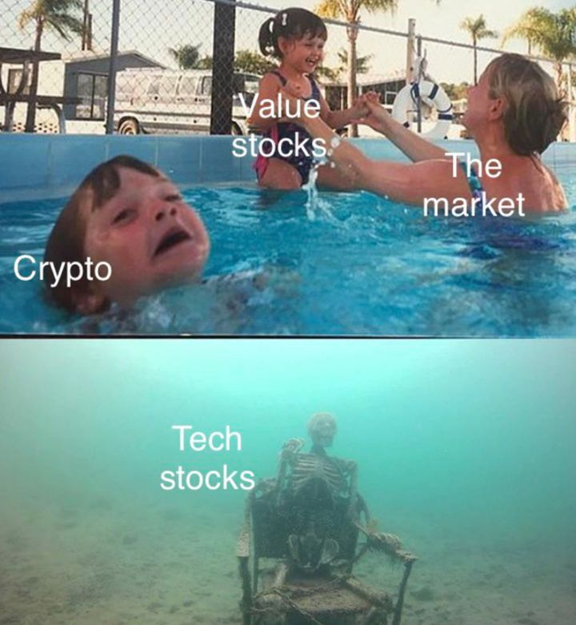
“Good time teach only bad lessons: that investing is easy, that you know its secrets, and that you needn’t worry about risk. The most valuable lessons are learned in tough times.” – Howard Marks.
SIsältö:
- Viimeinen jälkiviisastelu
- Mennen vuoden kokonaistuotto +45.0%
- Ajatuksia vuodelle 2022
- Uusi sijoitusallokaatio - USA:n kannabisyhtiöt
1. Viimeinen jälkiviisastelu
Arvoisa lukija, alkuun ilmoitusluontoinen asia: Luet näillä näkymin viimeistä Nomadien kvartaalien jälkiviisastelua, ainakin nykyisessä muodossaan. Olemme tulleet siihen johtopäätelmään, että tasaisin väliajoin tehtävä isompi tekemistemme ja ajatusten purkaus, on pikemminkin rasite kuin se työkalu, joksi se oli alunperin tarkoitettu.
Kirjoitimme yhtiömme historian ensimmäisessä blogitekstissä näin:
”Uskomme, että kirjoittaminen on ollut sijoittajalegendoilla yksi syy, miksi he ovat myös hyviä sijoittajia. Kirjoittaminen selventää ajatuksia. Periaatteiden ja arvojen kirjoittaminen vahvistaa niissä pysymistä. Kirjoittamalla selventää toimintamallejaan asiakkailleen niin, että he pysyvät mukana myös hankalimpina aikoina. Kirjoittaminen luo myös jäljen, jonka perusteella itseään voi myöhemmin arvioida ja sitä kautta kehittyä. Muisti temppuilee asiat omalle egolle myönteisiksi — kirjoitettu sana on armottoman puolueeton.”
Uskomme tähän edelleen, mutta haluamme vapauttaa itsemme ”pakollisen” kvartaalikatsauksen kahleista. Aiomme jatkossakin kirjoittaa pääasiassa sisäisesti oman sijoitusprosessimme tueksi, mutta tarkoituksena on myös aika ajoin julkaista sellaiseksi parhaiten sopivia tekstejä.
Julkilausutut näkemykset voivat vaikeuttaa sijoittajalle sitä tärkeintä eli kykyä muuttaa oman näkemyksensä, jos se osoittautuu vääräksi. Vaikka koskaan se ei varsinaisesti meille mikään ongelma ole ollut, saattavat jotkut lukijat erehtyä luulemaan, että mainitsemamme sijoitusideat olisivat jotenkin kiveen hakattuja. Tosiasiassa saatamme muuttaa mieltämme jo seuraavassa hetkessä, jos toteamme niiden osoittautuneen vääriksi.
Ja vääriksi ne osoittautuvatkin sijoittajista parhaimmillakin puolet ajasta. Esimerkiksi George Soroksen on sanottu olleen oikeassa vain 30% ajasta. Silti hän on yksi kaikkien aikojen legendoista!
Loppuviimeinen ylimääräinen ”pakkopullan” aiheuttama stressi syö kuitenkin kapasiteettia tehdä sitä itse tärkeintä, eli oman sijoitusprosessin toteuttamista. Haemme siihen tällä ratkaisulla muutosta.
Tarkoituksenamme on oppia jälleen nauttimaan kirjoittamisesta. Lopputuloksena toivon mukaan on myös parempia kirjoituksia – sellaisia, joita paradoksaalisesti olisi jatkossa jopa useammin julkaistavaksi.
2. Menneen vuoden kokonaistuotto +45.0%
Nomadien vuoden 2021 kokonaistuotoksi muodostui tyydyttävät +45.0%. USA:ssa mentiin jälleen kovaa (kokonaistuotto S&P500 +31%). Koko maailma, Pohjoismaat ja Eurooppa olivat suhteellisesti heikompia (MSCI World +23.4%, HEX25 +24.9%, STOXX600 +25.2%). Suojaamattomalle euromääräiselle sijoittajalle taalan vahvistumisesta tuli myös hyvää. Euroissa S&P500 tuotti osinkoineen melkein +42%.
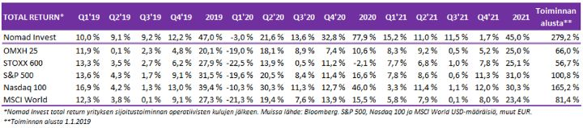
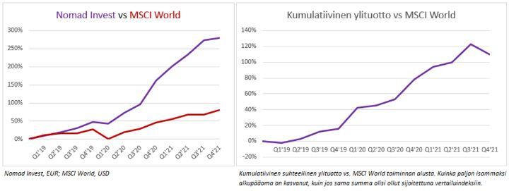
Vuoden viimeinen kvartaali, kuten koko vuosikin oli markkinalle erittäin vahva, vaikka sen läpi hetki hetkellä elääne ei jälleen siltä tuntunut. Volatiliteettia piisasi ja haasteita riitti. Q4:n tuotto +1.7% oli historiassamme toinen kerta, kun jäimme kaikille valitsemillemme vertailuindekseille. Aikaisempi kerta oli Q1’19. Tuolloin ajoimme toimintaamme vasta ylös.
Nomadien salkut olivat vahvan syksyn jälkeen huipuissaan marraskuun puolivälissä. Sen jälkeen oli parin viikon musta jakso, joka kulminoitui Omikron-huolien kärjistymiseen. Noina parina viikkona salkkumme ottivat osumaa käytännössä joka päivä. Drawdownista muodostui varsin merkittävä ja koko kvartaalin tuotoksi muodostui historiamme absoluuttisesti toiseksi huonoin (Q1'20 koronadippi -3.0% heikoin).
Syyt laskulle löytyivät yhtäältä markkinan yleisestä teemasta eli inflaatiosta ja sen seurauksena Fedin (ja joidenkin muiden keskuspankkien) kommunikoinnista, jossa oli 2018 loppusyksyn kaikua. Talouskasvun lähestyessä huipputasojaan ja stagflaatiopelkojen noustessa pintaan, J. Powellin viesti kääntyi aikaisempaa tiukemmaksi. Aivan kuten 2018, jolloin hän oli vasta aloittanut Fedin puikoissa.
Toisaalta osakevalintammekin niin sanotusti kosahtivat silmille yksi toisensa jälkeen. Seuraavassa niistä kustakin lyhyesti ja siitä, mitä ajattelemme niistä tällä hetkellä:
Alibaba: Huono kvartaalitulos antoi osakkeen murheelliselle vuodelle lisäpainetta. Alibaban osake puolittui vuonna 2021. Q4:llä laskua 25%. Olemme kirjoittaneet sijoituslogiikastamme aikaisemminkin, eikä ajattelumme ole juurikaan muuttunut. Kilpailu kiristyy regulaattorin päätökselle, mutta paljon on jo hinnoiteltu sisään. Sentimentti Alibaban, kuten kaikkien kiinalaisten teknologiayhtiöiden osalta on erittäin huono. Monet institutionaaliset sijoittajat ovat poistuneet eivätkä koskekaan näihin enää. Tätä ”päämies-agentti-ongelmaa” on tärkeä miettiä mitä tahansa sijoitusta tehdessä. Tässä tapauksessa salkunhoitajan (agentin) voi olla haastava selittää päämiehelleen (loppusijoittajalle), miksi ylipäätään on sijoitettuna Kiinaan.
Tottahan se on, harva länsimaalainen sijoittaja Kiinassa mitään varsinaista suhteellista etua voi saada. Emme mekään. Pidämme kuitenkin sentimenttiä niin huonona, että haluamme katsoa kuinka tässä käy. Silloin kun kukaan ei keksi syitä ostaa, on yleensä hyvä aika olla vastapuolena. Se, että monet ovat joutuneet poistumaan kokonaan, eivätkä hyvin todennäköisesti ole tulossa takaisin (tai kenties vasta korkeammilla hinnoilla), tarkoittaa, että tässä muutoin niin kilpaillussa pelissä on tällä hetkellä vähemmän kilpailijoita. Jos osakkeen hinta alkaa vahvistamaan näkemystämme, olemme valmiita lisäämään. Vaihdoimme syksyn aikana Kiina-omistuksemme Hong Kongiin varmuuden vuoksi, jos ADR-kuviossa tulisi jotain häikkää.
Kiinan teknologiajätit ovat kuin kolikon kääntöpuoli USA:n vastaaviin. Hyljeksityt vs. rakastetut. Autiot vs. ahtaat. Markkinoilla on tapana pyrkiä turhauttamaan ja tekemään naurunalaiseksi mahdollisimman suuri joukko sijoittajia. Markkinat menevät sieltä, mikä aiheuttaa mahdollisimman paljon tuskaa. Mikä olisikaan osuvampaa, kuin oheisen spreadin kiinni kurominen?
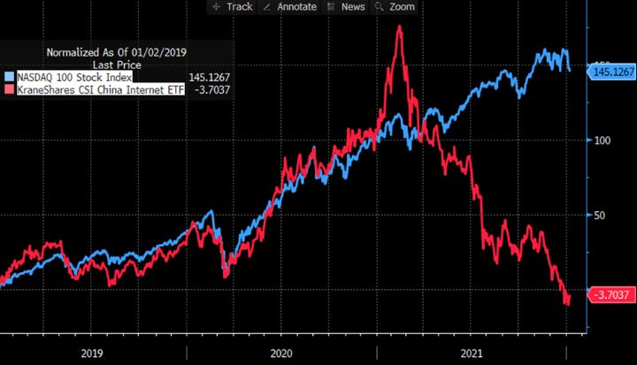
Seuraavat kolme tapausta olivat suhteellisen merkittävissä kokoluokissa salkussamme, mutta Q3-pyttymyksien myötä pienensimme niitä huomattavasti. Kurssien laskettua sen jälkeen varsin merkittävästi, olemme jälleen lähteneet lisäämään niitä. Kaikissa tarinat ovat elossa, jokseenkin hieman muuttuneita. Olemme valmiita hyppäämään isommin niihin takaisin, jos siltä näyttää.
Tourn: Olemme omistaneet Tournia ~30 kruunusta. Ennen Q3-tulosta oli se kivunnut ~65 kruunuun. Nyt kurssi on ~40, jolla yhtiö arvostetaan noin 40m euroon. Tämä pieni kasvuyhtiö on onnistuneesti saanut kaupallistettua Youtube-alustansa Nagaton, jonka avulla vaikuttajat ja sisällöntuottajat voivat ulkoistaa toimistaan tylsän ”bisnespuolen”, kuten mainonnan, laadun tarkkailun, yleisön kehittämisen tai tekijänoikeuksien puolustamisen, ja keskittyä olennaiseen eli itse sisällön tuottamiseen.
Nagato on Youtuben lisenssipartneri ja saa osuuden Youtube-kanavan mainosmyynnistä. Sillä alkaa on hyvä vakiintuva asema ja asiakaskunta ja se on pystynyt osoittamaan vahvaa kasvua tuotteen alkuvaiheessa, mikä on rohkaisevaa. Toisaalta pieniä notkahduksia tulee aina kasvun kulmakertoimeen, joka sai meidät pienentämään. Edelleen pidämme yhtiöstä ja heidän näkymistään (sisällöntuotantomarkkinan kasvu + hinnoittelun potentiaali).
Smart Wires: Tämä on myös ”startup”-osastoamme ja olemme kirjoittaneet Smart Wiresista aiemminkin. Yhtiö on kasvun kynnyksellä, mutta projektit antavat odottaa. Jos maailma halutaan pelastaa ilmaston lämpiämiseltä, tulisi laajemminkin investointiaaltojen alkaa pikkuhiljaa vyörymään. Niistä Smart Wiresin toivoisi saavansa osansa. Odottavan aika on pitkä. Tuote ja tiimi vaikuttavat hyviltä. Joskus uusien tuotteiden myyminen vain vie aikansa. Osake on laskenut SEK35 à 22 ja olemme jälleen kasvattanut positiota.
Catena Media: Kumppanuusmarkinointia nettikasinoille ja vedonlyöntisivustoille (iGaming) toimittava Catena Media on yksi aktiivisen kaupan käynnin osakkeistamme. Aloimme ostaa sitä syksyllä ~46 SEK sisäpiiriostosten vanavedessä. Osake kipusi 70+, kenties hieman liian innokkaasti. Q3-tulos oli kutakuinkin tiedossa, silti osaketta myytiin. Syy oli lokakuun ennustettu myynti, mutta niissä ei vielä näy Q4 lopussa ja Q1 alussa avautuvat uudet USA:n osavaltiot.
Catena Median myynnistä 40%+ tulee Pohjois-Amerikassa, jossa vedonlyöntimarkkinat ovat avautumassa tuoden kilpailua operaattoreiden välille, joka taasen on hyvä Catena Medialle. Odotamme potentiaalisten iGaming-pelaajien määrän kasvavan jopa 50% nyt Q1:llä Kanadan Ontarion ja USA:n New Yorkin avautuessa. Samaan aikaan toisaalta omikron on vähentänyt urheilutapahtumia, joka on huomioitava. H1-tuloksessa pitäisi kuitenkin näkyä hyvää, jota kurssi ei mielestämme heijastele. Olemmekin jälleen alkaneet kasvattamaan omistusta.
3. Ajatuksia vuodelle 2022
Markets are constantly in a state of uncertainty and flux, and money is made by discounting the obvious and betting on the unexpected. – George Soros
Uuden vuoden alku jatkaa siitä mihin edellisvuosi päätettiin. Konsensus on levällään ja volatiliteettia piisaa markkinoilla. Teemamme vuoteen tultaessa: pääomien puolustaminen ja paikoittaiset hyökkäykset. Nyt ei kuitenkaan ole suurempien sankaritekojen aika. Toisaalta moni muukin ajattelee samoin. Ja siinä piilee mahdollisuus.
Tämän hetkisiä narratiiveja:
- Inflaatio on kaikkien huulilla; helpottaako keväällä?
- Samaan aikaan talouden syklinen kasvu osoittaa orastavia hidastumisen merkkejä.
- Ja tähän saumaan Fed ja muut keskuspankit ovat lähdössä koronnostoihin; vältytäänkö rahapoliittiselta virheeltä?
- Korona on mahdollisesti poistumassa omikronin myötä sijoittajien mielistä – vai onko?
- Välikausivaalit Amerikan Yhdysvalloissa marraskuussa; inflaatio hermostuttaa poliitikkoja.
- Kiinan talous köhii; seuraavaksi stimulusta? Etenkin sikäläiset internetosakkeet houkuttelevat.
- Taistelu ilmastonlämpiämistä vastaan pitäisi saada kunnolla käyntiin; mikä on vaikutus raaka-aineisiin?
- Levottomuuksia on jo nähty Kazakhstanissa; entä geopolitiikan kuumat perunat Venäjä ja Kiina?
- Sentimentti ja positiointi; konsensus levällään, mutta korjaustakin on jo tehty.
Vuosikaudet keskuspankkiirit turhaan yrittivät saada inflaatiota aikaiseksi. Tarvittiin korona sotkemaan toimitusketjut ja samalla poliitikot löysivät rahapuun. Inflaatio on kaikkien huulilla ja se on juurisyy kaikkia eniten huolestuttavaan pelkoon: keskuspankit uhkaavat lopettaa yli vuosikymmenen kestäneet mielettömän aistikkaat juhlat!
Olemme olleet inflaatiojunassa jo pidempään ja kirjoittaneet inflaatiosta itsemme pyörryksiin jo aikaisemmin (lisää pohdiskelua inflaatiosta täältä). Se on nyt saatu. Mitä seuraavaksi?
Tiivistäen nykytilanne: Vielä kesällä Fed toisteli inflaation väliaikaisuutta ja oli valmis muutenkin katsomaan korkeampaa inflaatiota pidempään sormien läpi. Koronnostoihin ei aiottu vielä 2022. Puoli vuotta myöhemmin ja ääni kellossa on muuttunut. Koronnostoja on suunnitteilla kolme.
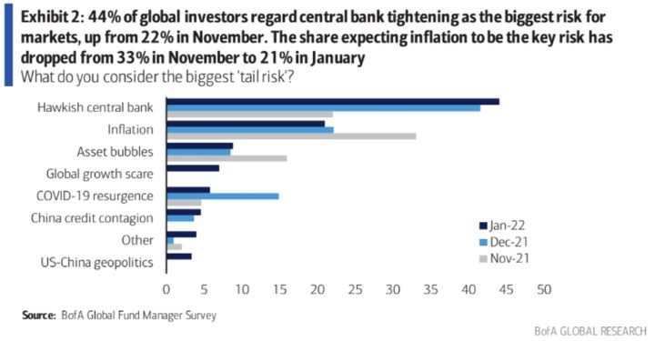
Itse asiassa markkinoiden inflaatiohuolet ovat hieman helpottaneet, mutta sitäkin enemmän pelätään sitä, kuinka aggressiivinen keskuspankki on koronnostojen ja etenkin taseensa pienentämisen suhteen. Fedin avomarkkinakomitean jäsenet olivat jo keskustelleet taseen pienentämisen aloittamista vielä tämän vuoden puolella.
Inflaation jyllätessä korkeimmillaan sitten 80-luvun alun, ovat markkinat jo ottaneet etukenoa Fedin toimille. Korkomarkkinoiden implisiittinen todennäköisyys neljälle nostolle joulukuuhun mennessä on yli 70%. Viiden noston todennäköisyys on jo yli 40%
Kun tarina markkinalla sekä sentimentti ja sitä kautta hinnoittelu ja positionti ovat muuttuneet inflaatiota odottavaan asentoon, on hyvä miettiä myös treidin toista puolta. Voi nimittäin olla, että tarvittaisiin odotukset ylittävät inflaatioluvut, jotta inflaatiotreidiin saisi vielä lisäpuhtia. Odotukset täyttävät luvut eivät välttämättä enää riittäisi.
Inflaatiossa itsessään on sekä itse itseään ruokkivia että hillitseviä elementtejä. Yhtäältä nousevien hintojen odotukset ruokkivat ostokäyttäytymistä, jotka pönkittävät hintoja. Toisaalta jossain vaiheessa paras lääke korkeille hinnoille ovat korkeat hinnat itse. Hintojen noustessa jossain vaiheessa kysyntä laskee ja/tai tarjonta kasvaa sen verran, että hinnat jälleen tasaantuvat.
Ilman uusia isompia koronasulkuja, on kuitenkin oletettavaa, että komponenttipula jossain vaiheessa helpottaa ja toimitusketjujen solmut purkaantuvat. Paikoittain voi lopulta tulla tilanne, että tavaraa on tuotettu varastoon jopa liian paljon. Saataisiin käänteinen kysynnän piiskavaikutus.
Välittäjä SEB:n alkuvuoden tiedustelussa pohjoismaisista yhtiöistä kuitenkin vain 33% odotti tuotantokustannusten laskevan vuonna 2022. Vain 21% vastasi odottavansa toimitusaikojen lyhentyvän. Tilanne sillä saralla voi siis kestää vielä pidempään.
Joka tapauksessa kevääseen tultaessa vertailuluvut alkavat vetämään inflaatiota alas (inflaatio itsessään on hinnan vuosimuutos). Paluu aivan lähtöruutuun olisi yllättävää. Asettuminen totuttua korkeammalle, mutta nykyisiä historiallisen korkeita tasoja selvästi alemmalle tasolle, lienee todennäköisintä.
Poliitikot ovat myös yksi villikortti. Presidentti Bidenin kannatusluvut ovat laskeneet kuin lehmän häntä ja hänen agendansa on jäänyt lupausten tasolle. Inflaatio on rokottanut eniten yhteiskunnan heikommassa asemassa olevia, joten USA:n vasemmalle nojaavalla johdolla on paineet tehdä jotain. Välikausivaalit lähestyvät marraskuussa ja tilanne ei näytä hyvältä heidän kannaltaan.
Biden ilmoittikin jo aikovansa jakaa miljardeja pienituloisille kansalaisille nousseiden lämmityskustannusten kattamiseen. Se itsessään on kuitenkin inflatorista, sillä se estää korkeiden hintojen normaalia kysyntää heikentävää vaikutusta. Toisaalta demokraatit ovat ilmeisesti jo pohtineet eri hintasääntelyn keinoja.
Fed on muutenkin jäänyt pahasti jälkeen omassa pelissään eli inflaatio-odotusten ohjaamisessa. Nyt poliitikotkin ovat jälleen tunkemassa heidän tontilleen. Fedin on jollain tapaa päästävä tilanteen edelle. Poliitikkojen väläytellessä hintasääntelyjä, voi Fed joutua painamaan paniikkinappulaa. Yksi tapa voi olla odotuksia isompi ensimmäinen nosto, joka voisi hillitä inflaatio-odotuksia.
Fedin tilannetta ei helpota, että talouden syklinen kasvukerroin on muutenkin jo taipumassa alas. Jos Fed on pakotettu miellyttämään mieluummin poliitikkoja kuin markkinoita, on riski-asseteille helppo nähdä varsin tuulisia aikoja. Aina, kun jonkin skenaarion näkeminen on ”helppoa”, voi muistuttaa itseään, että vaikka sen vastakohdan näkeminen on ”vaikeaa”, sekään tuskin on kuitenkaan mahdotonta.
Korona on sentään pikkuhiljaa poistumassa merkittävänä muuttujana sijoittajien mielissä. Variantti toisensa jälkeen on nähty, että koronan vaarallisuus on laantunut. Virukset haluavat lisääntyä ja siten säilyä hengissä. Liian vakava virus tappaisi kantajansa lisäksi myös lopulta itsensä.
Ihmiskunta myös sopeutuu. Markkinat ja talous ovat yksi iso mukautuva systeemi, joka on oppinut korona-aalto kerrallaan elämään sen kanssa, jolloin viruksen vaikutukset niihin ovat myös olleet toinen toistaan lievempiä.
Kysymysmerkit ovat jälleen poliittisia. Etenkin Kiinassa on ollut vankka nollaperiaate, jolla ilmeisesti halutaan varmistaa, etteivät tartuntaluvut pääse ryöpsähtämään juuri ennen talviolympialaisia. Isommat sulut olisivat luonnollisesti jälleen huonoja toimitusketjuille ja siten myös inflatorisia. Totaalisulun sattuessa, syntyisi markkinareaktion seurauksena todennäköisesti viimeinen paikka ”myydä” koronaa.
Omaa hiljaiseloaan sijoitustarinana elää ilmastonmuutos. Tuntuu, että koronavuonna henkiin herännyt keskustelu ja poliittiset lupaukset investoinneista ovat hieman kuivuneet kasaan. Monet eri uusiutuvien energia-alojen yhtiöt rämpivät kuolemanlaaksossa odottaen projekteja, joilla validoida tuotteitaan syntyville markkinoille. Ne, jotka nousevat laakson toiselta puolelta hengissä ovat todennäköisimpiä voittajina. Odotamme (maapallon tulevaisuuden puolesta toivomme!), että tämä teema nostaa päätään vuonna 2022.
Osaltaan sen seurauksena raaka-aineet öljystä kivihiileen ovat nousseet vahvasti. Kehitys nostaa uusiutuvan energian suhteellista kannattavuutta ruokkien toivon mukaan investointeja. Toinen puoli tarinassa on, että juuri pitkälti uusiutuvien takia monet kaivokset ja öljy-yhtiötkin ovat leikanneet investointejaan uuteen kapasiteettiin. Kunnes uusiutuvien energiamuotojen kanssa ollaan kunnolla vauhdissa, tarvitaan fossiilisia polttoaineita. Monien uusiutuvaa energiaa tuottavien teknologioiden valmistukseen vaaditaan lisäksi merkittävästi eri mineraaleja kuten kuparia, alumiinia tai kobalttia.
Nousseet energiahinnatrokottavat usein eniten heikoimmassa asemassa olevia ihmisiä. Paikka paikoin ihmiset ovat tyytymättömyyttään jo lähteneet kaduille, kuten Kazakstanissa nähtiin. Ellei tilanne korjaannu, voidaan vastaavia levottomuuksia nähdä laajemminkin.
Geopoliittisella rintamalla muhii myös. Venäjä uhittelee Valko-Venäjän suhteen. Kiinalla on myös oma agendansa. Näitä kehityskulkuja on täysin mahdoton ennustaa, eikä sitä yritetäkään, vaan tilanteita on hyvä pitää silmällä.
Tätä taustaa vasten päästään itse osakemarkkinoihin.
Taktinen pelikirja
Ennustamisen sijaan yritämme miettiä, mikä on jo tiedossa ja diskontattuna sisään markkinahintoihin, ja mikä saisi aikaan heilahduksen tasapainossa. Tarkoitus on varautua siten, että olisi asemoitunut kuhunkin odotusarvoiseen skenaarioon, ja kykenisi mahdollisimman nopeasti uudelleenasemoitumaan todennäköisyyksien muuttuessa. Tarkastellaan nykytilannetta.
Tuoreimpien sijoittajakyselyjen perusteella sentimentti on hyvin varauksellinen ja paikka paikoin varsin pelokaskin. Pienikin räsähdys markkinoilla tulkitaan käänteen alkamisen merkkinä. Markkina harvoin ovat tehnyt huippunsa tällaisessa pelonsekaisessa tunnelmassa.
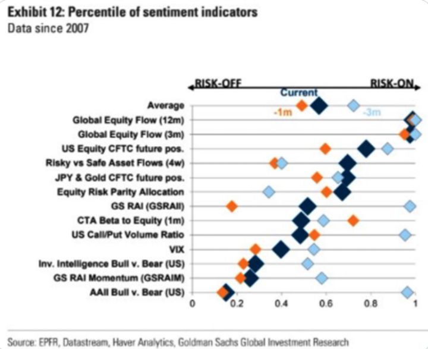
Tunnelma on kahtiajakoinen. Yhtäältä on pelkoa ja kasvuosastolla kipuillaan. Toisaalta osakkeet ovat ylipainossa ja arvosijoittajat ovat nyt suorastaan riehaantuneet. Reflaatio- ja inflaatiotreidi on saanut sijoittajat korviaan myöden täyteen syklisiä, perinteisiä arvosektoreita kuten pankkeja sekä teollisuus-, raaka-aine- ja energiayhtiötä. Niiden ostojen seurauksena osakepainot keskimäärin on hilattu viimeisen kuukaudenkin aikana entistä isompaan ylipainoon.
Myyntilaariin ovat joutaneet korkoherkät teknologiayhtiöt, joita on myyty jo melkein vuoden päivät, ja jotka ovat sijoittajilla alimmassa painossa sitten finanssikriisin pohjien. Tämä ei juurikaan koske suurimpia ja kauneimpia eli ”fangejä”. Ne ovat toimineet piilopaikkoina.
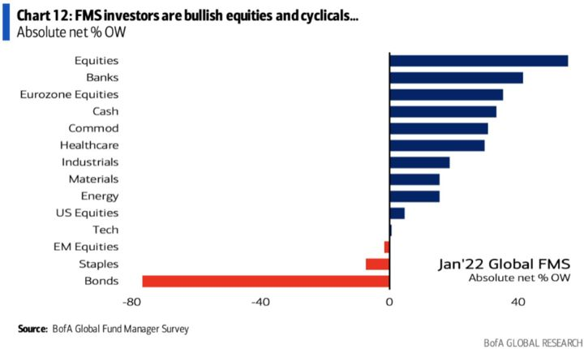
Takana ostokliimaksi ja lihasmuistissa BTFD:
Allekirjoittanut aloitti aktiivisemman sijoittamisen vuonna 2008. Tuolloin finanssikriisin yltyessä osakkeet tulivat vain alas. Siinä ehti pettymään pahemman kerran, kun monet ensimmäiset ostot vain painuivat tappiolle. Uuden nousun jo alettua kesti toista vuotta ennen kuin kunnolla havahtui siihen, ettei kaikkiin nousuihin kannata olla myymässä.
Aivan samoin voi nyt olla tilanne, jossa viimeisen vuosikymmenen härkämarkkinasta sokaistuneet sijoittajat tai koronan jälkeisen poskettoman kiiman synnyttämä uusi sijoittajasukupolvi ovat tottuneesti ostamassa jokaiseen laskuun.
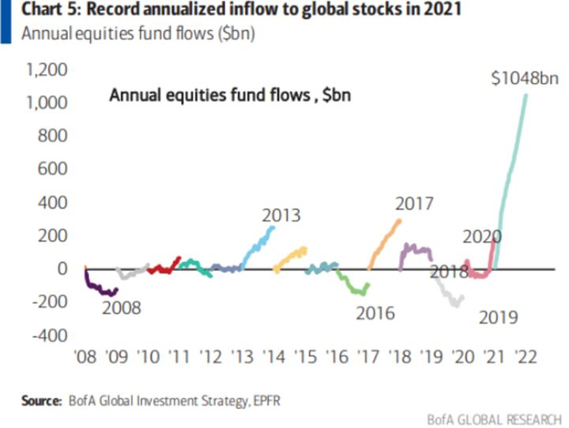
Kenen pokka pitää: Fedin vai markkinoiden?
Isompaa korjausta ei olla nähty toviin, joten sellainen voi hyvinkin olla käsillä. Terveessäkin markkinassa on tavallista nähdä 10% laskuja. Ultralöysän rahapolitiikan kauden loppuminen olisi sille varsin symbolinen aikaleima.
On kuitenkin muistettava markkinoille ominainen refleksisyys: jos markkinat romahtaisivat, saattaisi myös Fed tulla toisiin aatoksiin ja höllentää viestiään rahapolitiikasta. Powellilla on varmastikin tuoreessa muistissaan, mitä syksyllä 2018 kävi, kun osakkeet panikoivat alas 20% Kiinan kasvuhuolien ja Fedin haukkamaisen viestinnän seurauksena.
Tuolloin Powell oli juuri aloittanut Fedin puikoissa ja joutui pakittamaan haukkamaisesta rehvastelustaan. Hän muistanee sen kuin eilisen ja tuskin on valmis ajamaan taloutta taantumaan. Se ei myöskään tuskin kävisi välikausivaaleihin valmistautuville heikoista kannattavuuslukemista kärsiville demokraateille.
Analogia teknokuplaan ei perusteltu
Vaikka arvostukset ovat koholla, ovat ne pitkälti fangien ja kumppanien ansiosta. S&P500-indeksistä suurimmat kymmenen yhtiötä ovat 30% markkina-arvosta ja niiden arvostukset ovat kieltämättä korkeat. Niitä ei kuitenkaan voi verrata teknokuplaan tilanteeseen. Esimerkiksi fangien kasvu, kassavirta ja taseprofiili eivät ole samalta planeetalta kuin, missä teknokuplassa oltiin. Niiden arvostukset ovat pitkälti hyvin ansaittuja. Etenkin huomioiden korkotason, joka teknokuplassa oli 4%.
Top 10 -yhtiöiden tuloskontribuutio on kuitenkin laskussa, kuten kuvasta nähdään. Lisäksi ne ovat varsin yliomistettuja, joten juuri tällä hetkellä niiden suhteellinen houkuttelevuus meille ei ole ihanteellisin. Jos käy kuin tarinan sodassa, että kenraalit ammutaan viimeisinä, niin näiden isojen biljoonayhtiöiden kaatuminen toisi indekseihin painetta.
Sen sijaan loput 90% osakkeista eivät kuitenkaan ole erityisen tyyriitä. PE alle 20x ei kuulosta älyttömältä, edelleen huomioiden korkotason. Ei se varsinaisen halpakaan kuitenkaan ole.
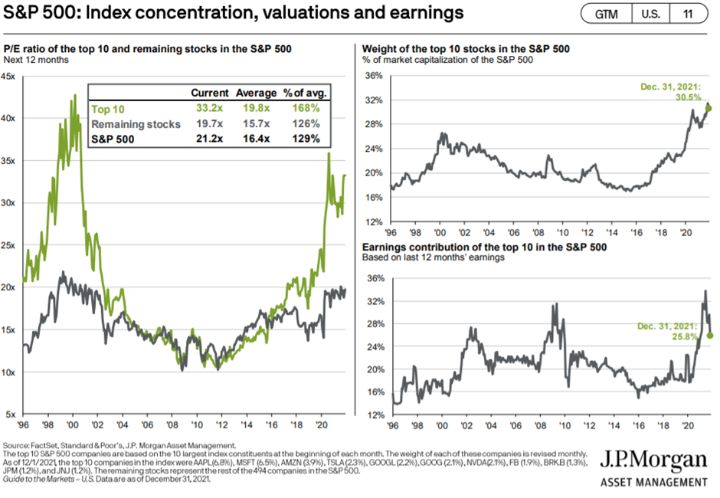
Kadulla virtaa jo pienen pieni verivana
Teknokupla-analogiaan fiksoituneet ovat saattaneet olla huomaamatta, että nykypäivän teknokupla on saattanut jo puhjeta. Monet vuosi sitten äärimmilleen venytetyistä markkinan nurkkakuplista ovat nimittäin pihisseet ilmaa ulos jo vuoden päivät. Yleisindekseihin sijoittava on ollut autuaan tietämätön tästä koetusta tuskasta. Ollapa indeksisijoittaja.
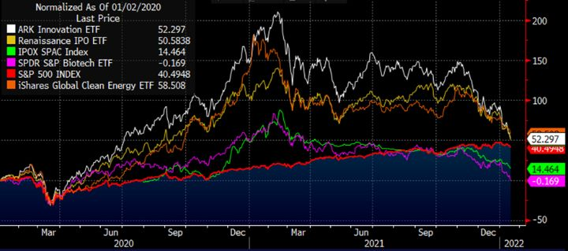
Esimerkiksi monet koronasta hyötyneet yhtiöt, joiden osakkeet kävivät kuussa, kiersivät sen kuin Apollo 8 konsanaan, ja jatkoivat samoilla vauhdeilla takaisin maanpinnalle. Osa yhtiöistä ei varmastikaan ansainnut niiltä hetkellisesti odotettuja kasvulukuja. Osan liiketoimintamallit saattavat olla vaillinaiset. Osa saattoi olla suoranaisia huijauksia.
Osalla taas voi olla hyvä tuote ja selvät kasvunäkymät koronakrapulasta selvittyään. Niiden arvostus juoksi vain aikaansa edelle ja on nyt korjannut muiden mukana alas. Romukasasta saattaa tehdä löytöjä.
Sijoittajien myytyä kasvua rankalla kädellä olemme innostuneet uudelleen monistakin kasvuosakkeista. Tiedostamme riskin, että olemme hönöjä, jotka ostavat ensimmäisen vähänkään isomman dipin ja jäämme seuraavassa käänteessä jyrän alle. Olemme kuitenkin lähteneet kevyesti ostoksille. Näistä voinemme kirjoittaa toisessa katsauksessa myöhemmin lisää.
Jos keväällä inflaatiotarina osoittautuu liialliseksi, tai jos talouskasvussa tapahtuu köhimistä, voivat strukturaalista kasvua osoittavien yhtiöiden osakkeet nousta jälleen suhteellisen houkutteleviksi. Etenkin kun niiden arvostukset ovat korjanneet ja monet isoista sijoittajista jo myyneet osakkeensa.
Alat, jotka erityisesti ovat nousseet kiinnostuksemme kohteiksi ovat uusiutuva energia, internet, software ja medtech. Ohessa esimerkki SaaS- ja internet-yhtiöiden arvostuksien kehityksestä.
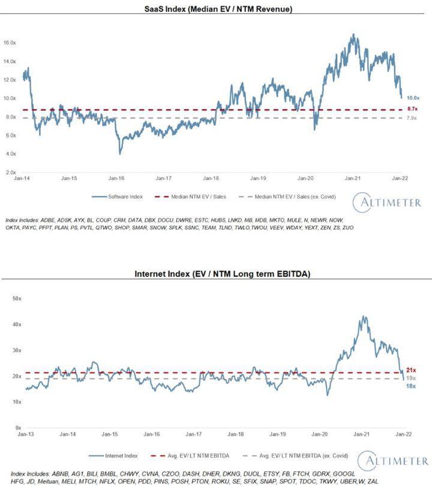
Korot ovat mörkömuuttuja, mutta…
Korkoihin tiivistyvät inflaation, talouskasvun ja keskuspankkien pyhä kolminainen sekamelska. Kuten seuraavasta kuvasta nähdään, on koroilla negatiivinen vaikutus arvostuksiin, mutta kyseessä ei suinkaan ole täysin suora korrelaatio. Liikkumatilaa on. (Hat tip: Heikki Keskiväli)
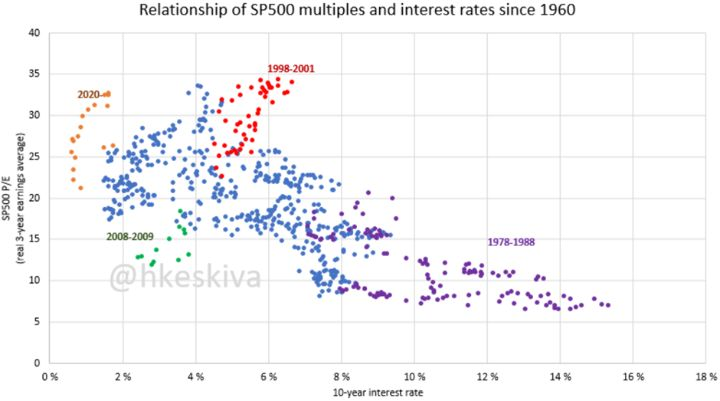
Silmäillen kuvaajaa huomataan, että vasta 4% tai jopa 6% korkotason jälkeen alkaa muodostumaan selvä paine kertoimiin. Sen alla PE:t (kolmen vuoden keskimääräisellä tuloksella) ovat pyörineet 20-30x maastossa.
Ei siis ole kirkossa kuulutettu, että osakkeet romahtaisivat välittömästi, kun korot hieman nousisivat. Etenkin kun kriittistä on reaalikorko. USA:n inflaatio ollessa 7% ja kymppivuotisen ollessa <2%, ollaan vielä kaukana positiivisista reaalikoroista. Kuten yksi legendoista David Tepper sanoi vuonna 2018, ”herätä minut, kun korot ovat 4%.”
Rahapolitiikan ja syklisen kasvun ollessa siinä pisteessä kuin ne ovat, on vaikea olla superinnoissaan osakkeista. Se ei kuitenkaan tarkoita sitä, että pohjan pitäisi lähteä alta. Korjauksen tapahtuessa olisimme enemmän innoissaan osakkeiden potentiaalista, etenkin yllä jo mainittujen.
Osakevalintojen, suojauksen ja lyhytaikaisen treidauksen merkitys korostuvat
Koronan jälkeinen markkina on auttanut paljon ja saanut monet näyttämään suorastaan neroilta. Markkinoiden mahdollisesti halutessa korjausmoodiin on odotettavissa, ettei vastaavaa höveliäisyyttä olisi enää tarjolla. Se korostaa osakevalintojen ja suojautumisen tärkeyttä. Samoin meille se tarkoittaa, että lyhytaikaisen kaupankäynnin merkitys tuotoissa korostuu.
Olemme pyrkineet koko ajan isompiin ja pidempiaikaisiin sijoituksiin, joten jatkossa saatamme joutua tyytymään pienempään osuuteen pitkistä sijoituksista. Meillä on myös osaava kokopäiväinen treideri yhtiössä vääntämässä lyhyttä kauppaa.
Yritämme kuitenkin pystyä hyödyntämään ne vahvan näkemyksen uudet ideat, joita vuodessa ehkä tulee muutama. Se on osa-alue, jossa meillä on edelleen paljon potentiaalista parannettavaa. Eli silloin, kun olemme oikeassa, niin haluamme saatavan hyödyn olevan mahdollisimman iso, jotta se liikuttaisi kokonaisuutta.
Kuten Stanley Druckenmiller on sanonut:
”Three or four times a year you have conviction, and it is when your conviction is high that you have to bet big.”
Se on meidän tämän vuoden yksi päätavoitteista.
Lopuksi vielä esittelyssä uusi isompi temaattinen sijoitus, joka mahdollisesti täyttää edellä määritellyn potentiaalin...
4. Uusi sijoitusallokaatio – USA:n kannabissektori
Pitkässä juoksussa voinee olettaa ainakin jossain määrin, että tiede ja järki lopulta voittavat. Se pätee mitä enemmissä määrin sääntelyihin huumausaineista.
Psykedeelien on havaittu olevan tehokkaita hoitomuotoja mielenterveysongelmien ja riippuvuuksien hoidossa jo sata vuotta sitten. Ne eivät aiheuta riippuvuutta eikä niihin (oikein käytettynä) voi käytännössä menehtyä.
Kannabis taasen mietona huumausaineena on kokonaishaittoina arvioituna turvallisempi päihdyttäjä kuin esimerkiksi alkoholi. Sillä on myös havaittu olevan hyötyjä sairaanhoidollisissa terapioissa.
Siinä missä psykedeelien potentiaali on vasta kristalisoitumassa siihen viime vuosina uudelleen käynnistyneiden viranomaistakaisten tutkimusten myötä, on kannabiksen viihdekäyttö ollut laillista jo 20+ USA:n osavaltiossa sekä Kanadassa. Myös lääkekäytön laillistaminen on yleistymässä.
Euroopassa myönteisten yleisen mielipiteen pyörä on pyörähtänyt Portugalin dekriminalisoitua huumausaineiden käytön, Saksan pohtiessa kannabiksen laillistamista ja Maltan jo niin tehtyä.
USA:ssa useammassa osavaltiossa toimivien kannabisyhtiöiden (”multistate operator, MSO”) kasvu on ollut erittäin vahvaa viimeisinä vuosina osavaltioiden laillistamistredin myötä. Lisäbuustin toi korona.
Tänä vuonna tuon koronabuustin vertailulukujen ja alueellisesti kiristyneen kilpailutilanteen myötä koko sektori on ottanut happea. Konsensuksen ennusteet Q4’21 ja FY’22 saattavat olla vielä hivenen liian korkealla, mutta kurssilaskun myötä sitä on myös diskontattu sisään.
USA:n kannabismarkkina on kooltaan noin 100 miljardia dollaria, josta ~15 miljardia tulee laillisesta myynnistä aikuisten viihdekäyttöön. Lääkepuolen myynti on lähes yhtä suuri kuin viihdekäyttö, mutta suurin kasvupotentiaali tulee viihdekäytön yleistyessä. Arviot vaihtelevat, mutta markkinan koon on arvioitu olevan reilusti yli 40 miljardia vuonna 2025.
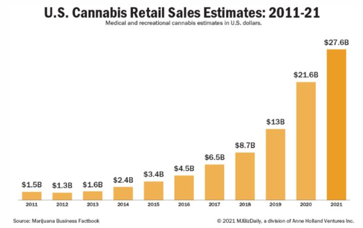
Markkinan kasvua ajavat seuraavat tekijät:
- Lyhyellä aikavälillä laillinen markkina kasvaa uusien osavaltioiden päättäessä sen laillistamisesta. Tänä vuonna on odotettavissa, että viihdekäyttö vapautuu mm. USA:n itärannikon suurissa osavaltioissa New Yorkissa (~14m yli 21 vuotiasta) ja New Jerseyssä (~6m).
- Keskipitkällä aikavälillä liittovaltion tason laillistaminen tai vähintään pankkitoiminnan mahdollistava sääntely. Bidenin valtaan nousun ja muutaman vaikutusvaltaisen demokraattisenaattorin hehkutusten myötä markkinat ehtivät tästä jo innostua. Asiasta on käytännössä yli puoluerajojen myönteinen näkemys ja edustajainhuone on jo useaan otteeseen antanut vihreää valoa. Silti, koska poliitikot ovat poliitikkoja, ovat markkinat joutuneet pettymään kerta toisensa jälkeen. Tähän voi tulla muutos tänä vuonna tai sitten myöhemmin. Mutta yleinen mielipide on selvä: USA:ssa viimeisimmät mielipidemittaukset povaavat lähes 70% kannatusta kannabiksen laillistamiselle. Viime vuonna myös useat yritykset, kuten maan yksi suurimmista työllistäjistä Amazon, lähtivät tukemaan lakimuutosta.
- Pitkällä aikavälillä yleisen mielipiteen muuttuessa kannabikselle hyväksyvämpään ja avoimempaan suuntaan, tullaan todennäköisesti enenevissä määrin siirtymään syötävien tai juotavien kannabinoideja sisältävien tuotteiden nauttimiseen alkoholin sijasta. Kuluttaja voisi esimerkiksi valita itselleen kulloiseenkin tilanteeseen ja fiilikseen sopivat kannabinoidiyhdisteet sisältävän juoman ja nauttia ystävän kanssa henkevästä keskustelusta ravintolassa, sen sijaan, että tyytyisi perinteiseen olueen tai viiniin, joissa molemmissa on kuitenkin yksi ja sama krapulaakin aiheuttava vaikuttava aine – alkoholi. On mielestämme helppo nähdä, että joidenkin vuosien päästä esim. kannabisjuomat tulevat viemään asiakkaita alkoholilta, joka vuonna 2020 oli USA:ssa 220 miljardin dollarin markkina (globaalisti ~1.4 biljoonaa).
Liittovaltion regulaatio ansaitsee lisää avaamista, sillä sen takia laillinenkin markkina on varsinainen villi länsi.
Poliittisissa keskusteluissa on pyörinyt vaihtoehtoina laillistaminen, dekriminalisointi sekä lievempi lakimuutos pankkitoiminnan sallimisesta (ns. SAFE Banking Act). Viimeksi loppusyksystä 2021 pankkitoiminnan lain läpivieminen tyssäsi kongressissa. Sen olivat nostaneet myönnytysratkaisuna esille republikaanit, mutta demokraatit halusivat sitoa kannabiksen laajempaan kokonaisuuteen, jossa huomioitaisiin sen koko laillisuusaspekti, josta tähän mennessä ovat kärsineet eniten vankiloita asuttavat vähemmistöjen edustajat.
SAFE Banking Act mahdollistaisi sen, että pankit uskaltaisivat ottaa talletuksia kannabisliiketoimintaa harjoittavilta yrityksiltä, jotka ovat osavaltiotasolla täysin laillisia liiketoimia. Nyt pankit kuitenkin pelkäävät mm. liitovaltion tason rahanpesusäännöksiä.
Tämän seurauksena useimmat, etenkin pienemmät kannabistoimijat eivät voi ottaa vastaan luottokorttimaksuja eivätkä saa pankkilainaa saati sitten pääse käsiksi rahoitusmarkkinoille. Heidän yrityksensä ovatkin hyvin alttiita ryöstöille rosvojen tietäessä heidän joutuvan asioimaan käteisellä. Myös verotulojen kerääminen on hankaloitunut, jonka jopa valtionvarainministeri Yellen on tiedostanut.
Politiikan, eikä vähintään USA:n politiikan, seuraaminen saa karvat pystyyn. Se jos jokin on ihmissielua mädättävää puuhaa eikä poliitikkojen varaan sijoituspäätöstä kannata jättää. Tämänkin sekoilun myötä USA:ssa jää saamatta miljardeja verotuloja ja kymmeniä ellei satoja tuhansia työpaikkoja vuodessa.
Tästä kaikesta huolimatta suurimmat MSO:t kuten Curaleaf, Cresco Labs, Trulieve, Verano ja Green Thumb Industries ovat kasvaneet vahvasti. Heillä on pääsy tietyin poikkeuskeinoin pankkijärjestelmään ja myös rahoitusmarkkinoille. He ovat suhteellisia voittajia pienempien toimijoiden kärsiessä.
MSO:t nimensä mukaisesti operoivat useassa osavaltiossa ja heillä on historiastaan kokemus siitä, miten toimintoja skaalataan. Kun jatkossa lisenssejä jaetaan uusissa avautuvissa osavaltioissa, ovat he luonnollisia kandidaatteja niitä saamaan.
Meitä ei kiinnosta regulaation odottaminen. Sen sijaan näemme toimijoissa merkittävää arvoa etenkin suhteessa niiden kasvunäkymiin. Uskomme kuitenkin, että regulaatio tulee enemmin tai myöhemmin, on se sitten marraskuun välikausivaalit tai joskus myöhemmin. Se olisi hetki, jolloin oikea institutionaalinen raha alkaisi vyörymään näihin osakkeisiin ja koko sektori arvostettaisiin merkittävästi korkeammalle.
Tällä hetkellä nimittäin kannabisosakkeita ei sallita noteerattavan USA:n päämarkkinoilla (ne ovat Kanadassa), eikä jotkut prime brokerit ota niiden osakkeita säilytykseensä, niiden liittovaltion regulaation vuoksi.
Harvoin on ollut tilannetta, jossa retail-sijoittaja on päässyt ennen institutionaalisia sijoittajia ostamaan sektoria, jolla on poikkeuksellisen hyvät kasvunäkymät ja siihen nähden erittäin alhainen arvostus. Lakimuutoksen jälkeen instituutiot tulevat ostamaan näitä, mutta tuolloin kurssit ovat hyvin todennäköisesti myöskin paljon korkeammalla.
Velkasijoittaja on jo herännyt. Keskimäärin MSO:t ovat saaneet eri lähteiden mukaan vuoden aikana ~5%-yks halvempaa rahaa kuin vuosi sitten! Siltikin edelleen suurimmat ja parhaimmat yhtiötkin joutuvat maksamaan velkarahasta 8-10% kuponkia.
Esimerkiksi joulukuun puolessa välissä Curaleaf keräsi USD425m velkarahaa 8% kupongilla aikaisempien velkojen uudelleen rahoittamiseen säästäen heiltä arviolta 20m vuotuisissa korkomenoissa. Kyseessä oli tähän mennessä suurin emissio, jonka yksikään MSO on koskaan tehnyt. Yhtiöillä on siis mahdollisuus vielä merkittävään tulosparannukseen pelkästään sillä, että lainoja uudelleen rahoitetaan entistä suotuisammin kustannuksin.
Lisäksi regulaatiolla on se negatiivinen vaikutus, että verovähennysten tekeminen ei onnistu, jolloin yhtiöiden efektiivinen veroaste on huomattavan korkea. Tämäkin tullee korjaantumaan ajan myötä.
Vaikka velkasijoittajalla oli ostohousut jalassa, oli osakesijoittajalla jalassaan pelkät shortsit. Koko MSO-sektori laski viime vuonna yli 30%. Keskimääräinen arvostustaso (seur 12kk EV/EBITDA) laski alkuvuoden huipuista 22x à 9x. Meitä erityisesti kiinnostavat, yllä mainitut suuremmat toimijat kasvavat sekä orgaanisesti että yrityskaupoin vuonna 2022 arviolta 30-60% ja tekevät 20-40% käyttökatetta. Niiden nettovelat suhteessa käyttökatteeseen ovat 0-2x.
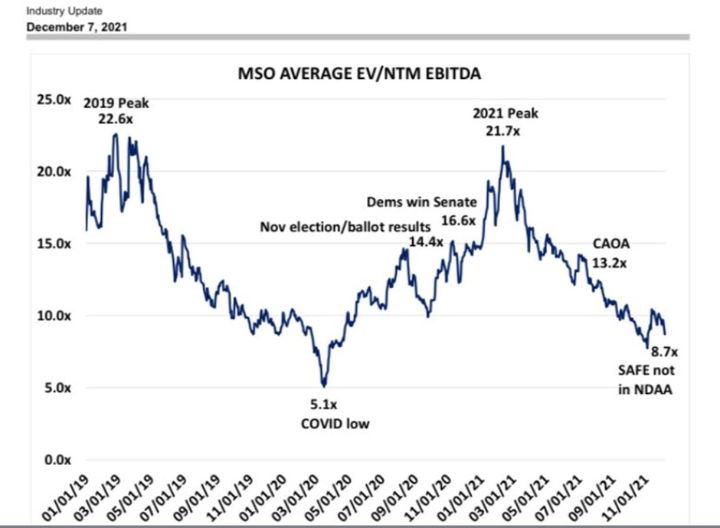
Aloitimme ostot loppuvuodesta 2021. Ajatuksenamme on, että koostamme hajautetun salkun siten, että puolet aiotusta kokonaispositioista jakautuu edellä mainittuihin tier-1 yhtiöihin. Toinen puolisko on allokoitu”MSOS” -ETF:ään, josta itsessään noin puolet on samoja tier-1 yhtiöitä ja puolet pienempiä ja spekulatiivisempia tier-2 ja tier-3 yhtiöitä. Osa niistä voi osoittautua tyhjiksi arvoiksi, mutta osalla voi olla isompi vipu myös ylöspäin, jos/kun regulaatio muuttuu.
Tällä kokonaisuudella sijoituksemme jakautuu siis 2/3 parhaimpiin ja 1/3 spekulatiivisempiin yhtiöihin. Uskomme myös, että parhaimmat yhtiöt paljastavat itsensä lopulta, kun seuraamme yhtiöitä ja pääsemme lisäämään yksittäisiin yhtiöihin. Tällä hetkellä olemme allokoineet puolet aiotusta kokonaispanoksesta. Toinen puolisko on tarkoitus sijoittaa jahka kurssit alkavat vahvistamaan teesiä.
Disclaimer:
Kolumnit sisältävät mielipiteitä ja mahdollisesti tietoa omista sijoituksistamme, jotka voivat vaihdella päivästä toiseen. Mitään, mitä kirjoitamme ei tule ottaa sijoitussuosituksena. Kuten teksteissämme painotamme, päätökset kannattaa aina tehdä itse. Lukija vastaa itse voitoistaan ja tappioistaan.